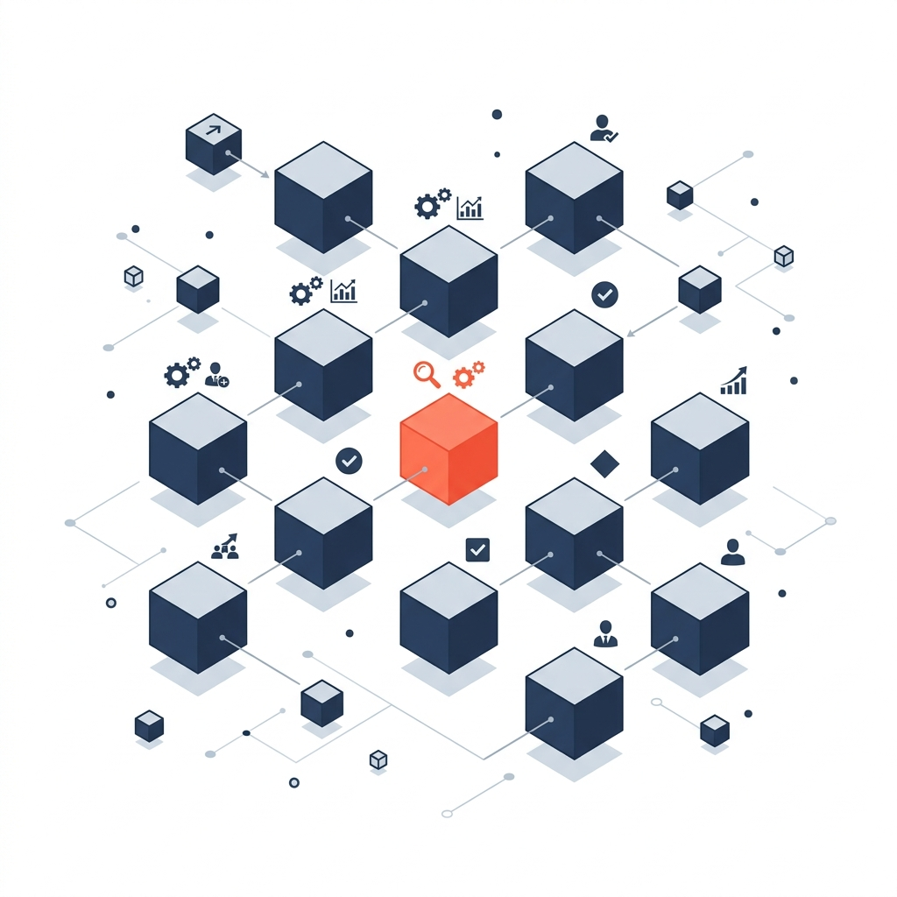

Les cas d'utilisation que la plateforme Newco permet de résoudre.The use cases the Newco platform helps you solve.
Chaque cas d'utilisation est configuré à partir de la plateforme Newco : vos méthodes, connaissances, règles, gabarits, agents et contrôles deviennent une solution personnalisée. La plateforme déplace une partie de la complexité de la programmation vers la configuration méthodologique, et accélère la réalisation de solutions IA+ adaptées à votre organisation.Each use case is configured from the Newco platform: your methods, knowledge, rules, templates, agents and controls become a tailored solution. The platform shifts part of the programming complexity toward methodological configuration, and speeds up delivery of AI+ solutions fit for your organization.
Six cas d'utilisation, un même moteur.Six use cases, one engine.
Six cas d'utilisation configurés à partir d'un même moteur méthodologique — la plateforme Newco — et adaptés à votre secteur et à votre réalité.Six use cases configured from one methodological engine — the Newco platform — and tailored to your sector and reality.
Conformité et traçabilitéCompliance & traceability
Structurer les exigences, intégrer les contrôles et démontrer la conformité.Structure requirements, embed controls and prove compliance.
Opportunités et offresOpportunities & proposals
De la demande client à la proposition approuvée, structurée et personnalisée.From client request to an approved, structured and tailored proposal.
Méthodes et processus intelligentsSmart methods & processes
Capturer les façons de faire et les rendre interactives, selon le rôle et le contexte.Capture ways of working and make them interactive, by role and context.
Base de connaissances intelligenteSmart knowledge base
Trouver et exploiter les connaissances internes, avec sources vérifiables et droits par rôle.Find and use internal knowledge, with verifiable sources and role-based access.
Collecte intelligente multimodaleMultimodal smart capture
Saisir sur le terrain formulaires, documents, voix, images et observations, même hors ligne, puis les structurer et les synchroniser automatiquement.Capture forms, documents, voice, images and observations in the field, even offline, then structure and sync them automatically.
Veille et intelligence stratégiqueMarket & strategic intelligence
Surveiller marchés, concurrents, technologies et normes pour des alertes et synthèses décisionnelles.Monitor markets, competitors, technologies and standards for decision-ready alerts and briefs.
À qui s'adressent ces cas d'utilisation.Who these use cases are for.
Les mêmes cas d'utilisation se configurent différemment selon la maturité, le secteur et les enjeux de chaque organisation.The same use cases are configured differently depending on each organization's maturity, sector and stakes.
| SegmentSegment | Besoin typiqueTypical need |
|---|---|
| PME structuréesStructured SMBs | Identifier par où commencer et cibler les cas d'utilisation IA à fort impact.Identify where to start and target the highest-impact AI use cases. |
| PME+Mid-market (PME+) | Étendre l'IA à plusieurs processus, avec gouvernance et adoption des équipes.Scale AI across several processes, with governance and team adoption. |
| Entreprises réglementéesRegulated enterprises | Maîtriser les risques et démontrer la conformité à chaque étape.Control risk and demonstrate compliance at every step. |
| AEC et milieu bâtiAEC & built environment | Relier données, processus et exploitation dans un cadre gouverné.Connect data, processes and operations within a governed framework. |
| Manufacturier et industrielManufacturing & industrial | Gagner en productivité et outiller les équipes terrain au quotidien.Boost productivity and equip field teams day to day. |
| Partenaires de marchéMarket partners | Concevoir des produits IA+ sectoriels et les porter au marché.Design sector-specific AI+ products and bring them to market. |
Votre marché n'est pas représenté, ou vous avez un autre cas d'utilisation en tête ?Your market isn't listed, or you have another use case in mind?
Contactez-nous pour en discuterContact us to discussConformité et traçabilitéCompliance & traceability
Structurer les obligations applicables, intégrer les contrôles aux opérations et maintenir les preuves nécessaires pour gérer et démontrer la conformité — lois, règlements, normes, politiques et exigences contractuelles.Structure applicable obligations, embed controls into operations and keep the evidence needed to manage and prove compliance — laws, regulations, standards, policies and contractual requirements.
Fonctionnalités majeuresKey capabilities
- Référentiel d'exigences, normes et obligationsRepository of requirements, standards and obligations
- Contrôles, validations et mesures correctivesControls, validations and corrective actions
- Liens de traçabilité entre sources et preuvesTraceability links between sources and evidence
- Rapports de conformité et dossiers d'auditCompliance reports and audit files
BénéficesBenefits
Gestion intelligente des opportunités et offresSmart opportunity & proposal management
De la réception d'une demande client jusqu'à la production et l'approbation d'une proposition : analyser la demande, identifier exigences et risques, estimer efforts, coûts et marges, puis générer une offre structurée et personnalisée.From incoming client request to proposal production and approval: analyze the request, identify requirements and risks, estimate effort, cost and margin, then generate a structured, tailored proposal.
Fonctionnalités majeuresKey capabilities
- Analyse des exigences et du contexte de la demandeAnalysis of requirements and request context
- Évaluation des risques, marges et rentabilitéAssessment of risk, margin and profitability
- Définition de la portée, des profils et des effortsScope, staffing profiles and effort definition
- Cycle de revue, approbation et génération de l'offreReview, approval and proposal generation cycle
BénéficesBenefits
Méthodes et processus intelligentsSmart methods & processes
Capturer les façons de faire d'une organisation, les structurer en méthodes et processus, puis les rendre accessibles dans un environnement interactif : collecte auprès des experts, modélisation des étapes, rôles, décisions et règles, validation collaborative et consultation assistée.Capture how an organization works, structure it into methods and processes, then make it available in an interactive environment: gather from experts, model steps, roles, decisions and rules, validate collaboratively and consult with assistance.
Fonctionnalités majeuresKey capabilities
- Capture guidée des pratiques et savoirs tacitesGuided capture of practices and tacit know-how
- Modélisation des étapes, rôles, décisions et contrôlesModeling of steps, roles, decisions and controls
- Consultation contextuelle selon le rôle et la situationContextual consultation by role and situation
- Génération d'actions, gabarits et livrables associésGeneration of actions, templates and related deliverables
BénéficesBenefits

Base de connaissances intelligenteSmart knowledge base
Accéder aux documents, données et connaissances internes à partir d'une interface adaptée au rôle : politiques, projets, contrats, décisions et références. La solution présente les sources, contextualise, compare et peut recommander une méthode ou générer un extrant.Access internal documents, data and knowledge from a role-aware interface: policies, projects, contracts, decisions and references. It surfaces sources, adds context, compares and can recommend a method or generate an output.
Fonctionnalités majeuresKey capabilities
- Recherche intelligente multi-sourcesMulti-source intelligent search
- Réponses contextualisées et sources vérifiablesContextualized answers with verifiable sources
- Profils, droits d'accès et ontologie d'affairesProfiles, access rights and business ontology
- Transformation des réponses en actions ou livrablesTurning answers into actions or deliverables
BénéficesBenefits
Collecte intelligente multimodaleMultimodal smart capture
Recueillir, structurer, qualifier et valider l'information de plusieurs formats et contextes : formulaires, documents, courriels, voix, photos, notes et données terrain. La solution extrait l'information, détecte les données manquantes et produit un dossier structuré.Collect, structure, qualify and validate information from many formats and contexts: forms, documents, emails, voice, photos, notes and field data. It extracts information, detects gaps and produces a structured file.
Fonctionnalités majeuresKey capabilities
- Formulaires, documents, voix, images et mesuresForms, documents, voice, images and measurements
- Détection des données manquantes et validationMissing-data detection and validation
- Utilisation Web, téléphone et tabletteWeb, phone and tablet use
- Mode hors ligne et synchronisation sécuriséeOffline mode and secure synchronization
BénéficesBenefits
Veille et intelligence stratégiqueMarket & strategic intelligence
Surveiller et analyser les tendances d'affaires, les concurrents, les clients, les technologies, les normes et les obligations — pour produire des alertes ciblées et des synthèses décisionnelles adaptées aux priorités de l'organisation.Monitor and analyze business trends, competitors, clients, technologies, standards and obligations — to produce targeted alerts and decision-ready briefs aligned with the organization's priorities.
Fonctionnalités majeuresKey capabilities
- Surveillance configurable des marchés, clients et concurrentsConfigurable monitoring of markets, clients and competitors
- Suivi des technologies, normes et changements réglementairesTracking of technologies, standards and regulatory changes
- Alertes ciblées, comparatifs et analyses d'impactTargeted alerts, comparisons and impact analysis
- Synthèses exécutives et historique des tendancesExecutive briefs and trend history
BénéficesBenefits
Quel cas d'utilisation correspond le mieux à votre besoin ?Which use case best fits your need?
Nous partons de votre contexte pour configurer la solution sur votre réalité — pas une démo générique.We start from your context to configure the solution to your reality — not a generic demo.